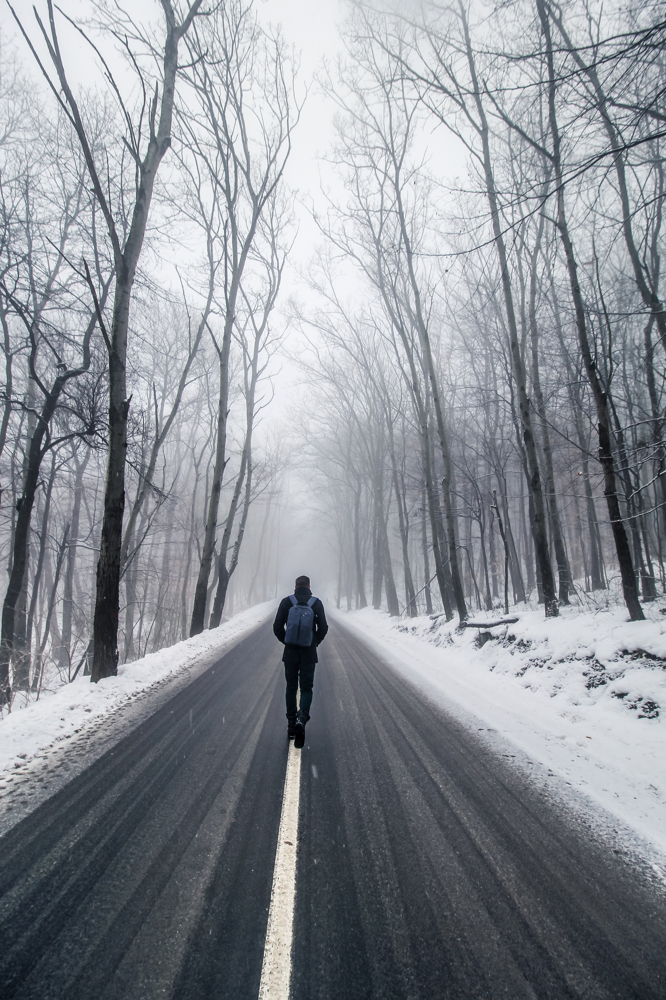
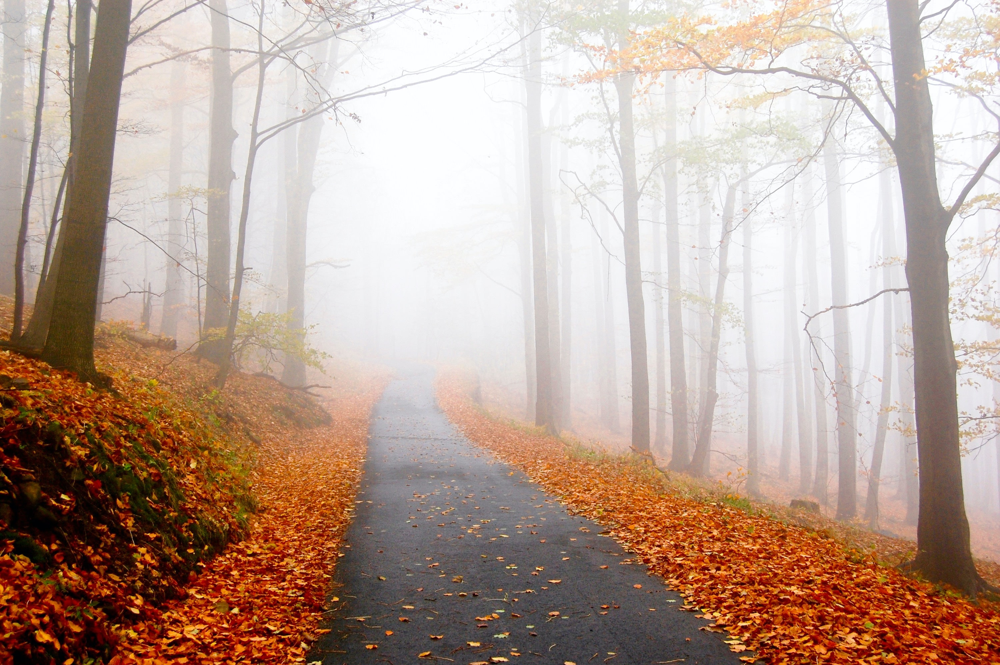
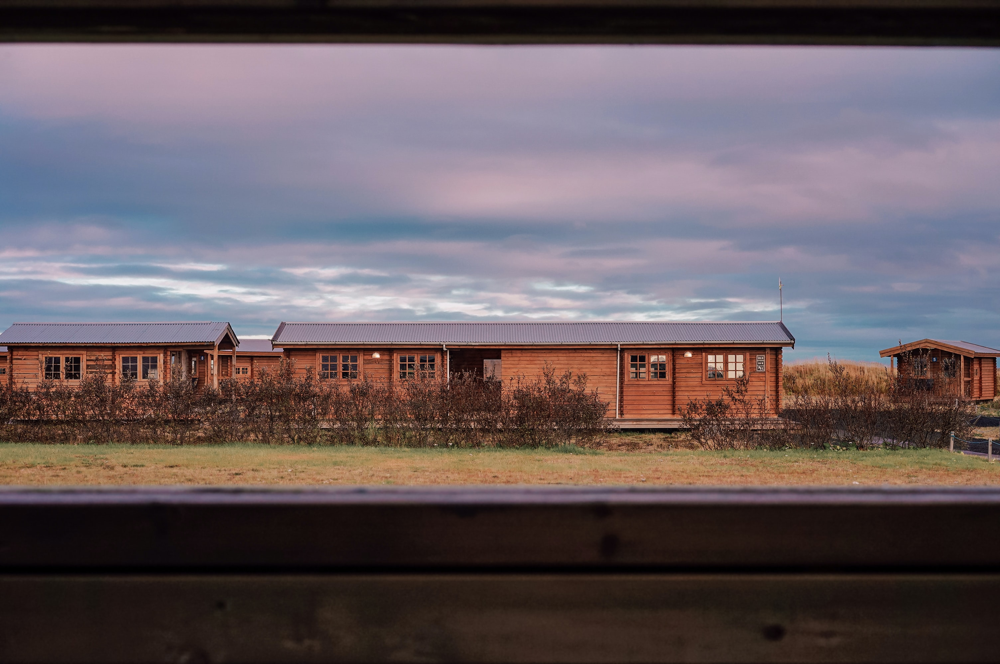
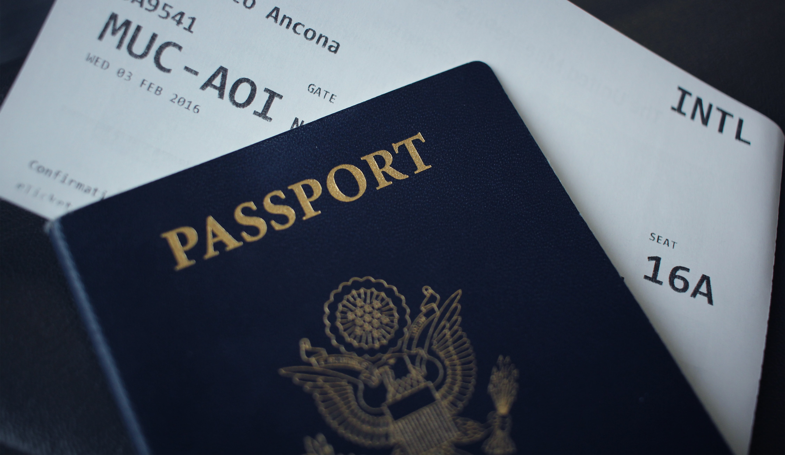
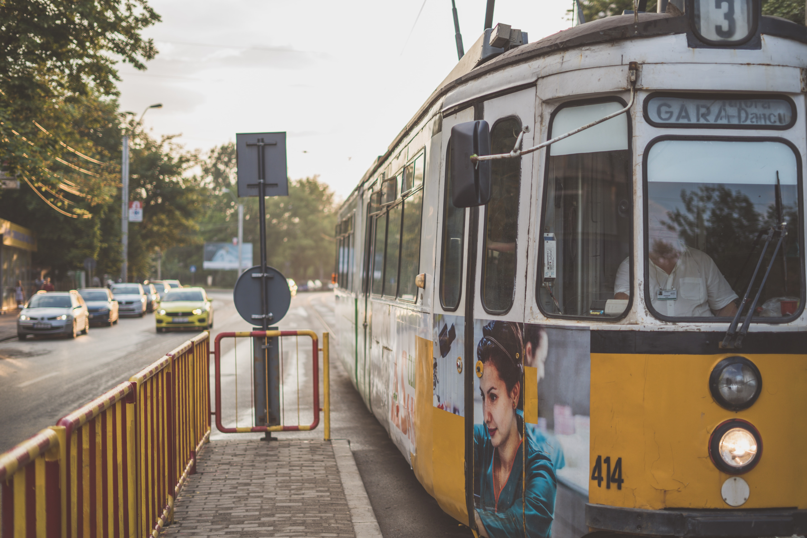
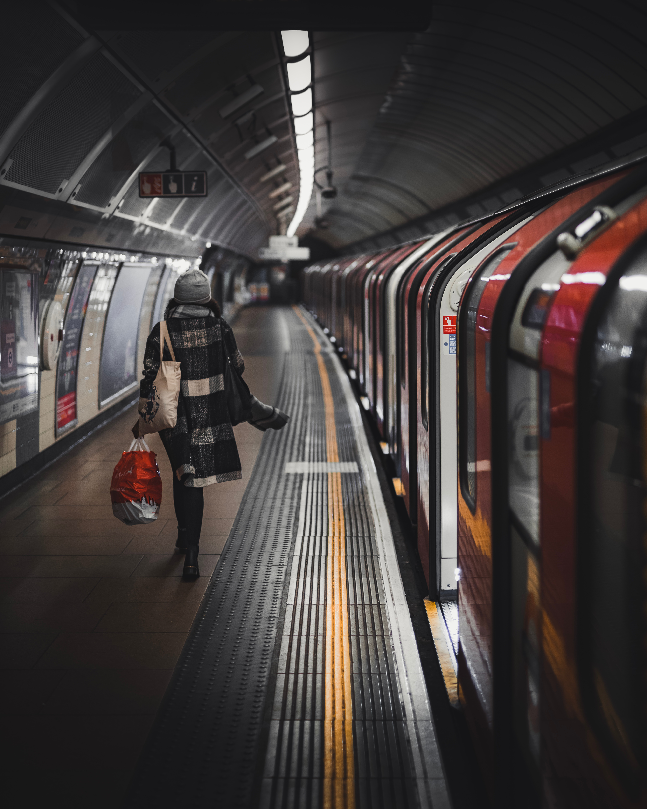
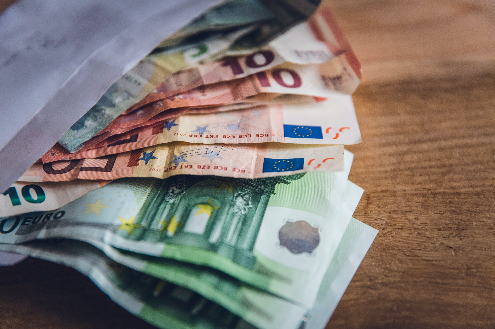
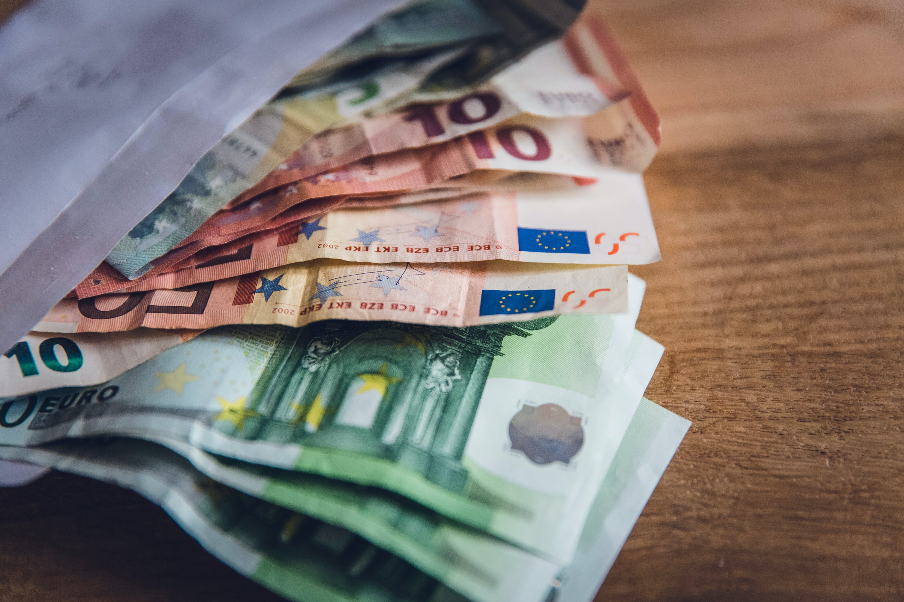
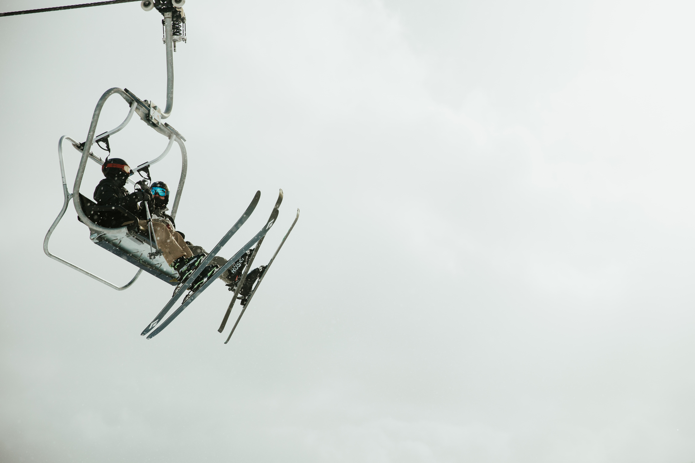
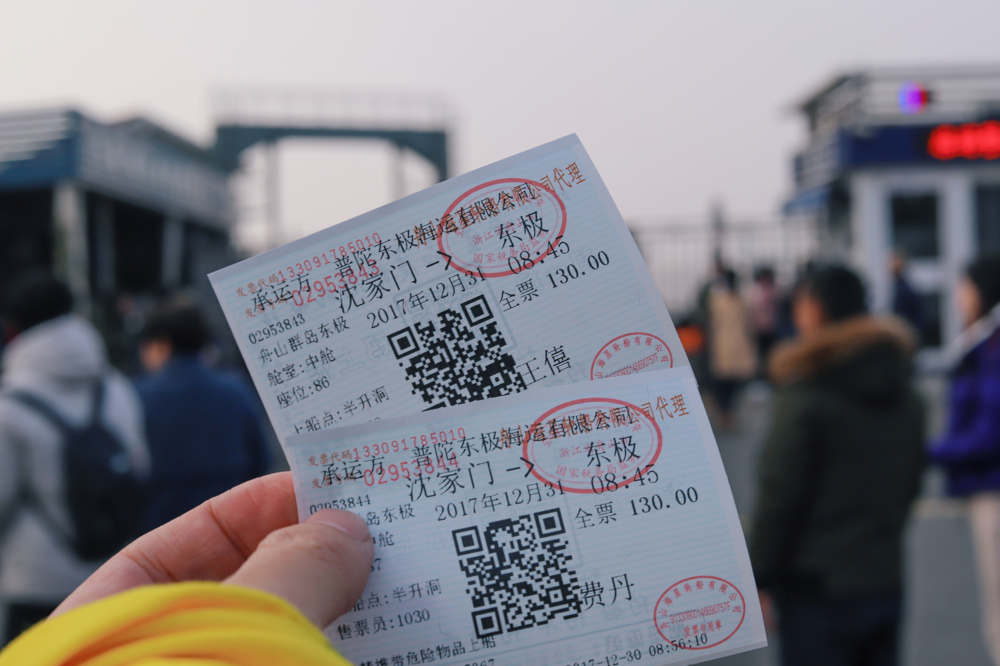

Exploring exotic places doesn’t have to cost a fortune
You certainly don’t need to win the lottery to travel the world – not if you know how to watch your pennies. We’ve complied some tried and tested tips to help you plan a holiday on a budget. Need further assistance?
1. Plan ahead
Travelling spontaneously is great, if you have the luxury of time and money to spare. But if you’re travelling on a budget, the first thing to do is come up with a plan. You don’t have need a tight, hour-by-hour itinerary, but you should at least have an idea of how long you’ll be spending in each city or country, and know the route that your epic adventure will take. Leaving less to chance means less unexpected spends; last-minute flights and accommodation are often far more expensive.


2. Travel out of season
Avoid trips during the school holidays, this is when the travel industry hikes up prices to take advantage of families who can only travel during these weeks. Research the best time to visit your intended destination, and then travel just before or after these dates. This is called the ‘shoulder season’, where you’ll still have a great trip but maybe the sun won’t shine quite as brightly (and, on the plus side, it won’t be quite as hot.) Hotels and airlines lower their prices to attract customers during this time.
 3. Be accommodation-savvy
Trade expensive hotel suites for dorm rooms in hostels. Sharing a room naturally divides the costs and communal bunk rooms offer the opportunity to meet people who might be keen to explore with you. Other great alternatives are websites like AirBnB and Couchsurfing, where you simply book a spare room in a local person’s house or apartment. It’ll halve the price and allow you an authentic snapshot of real life in the city. Consider your host your very own, personal tour guide, filled with insider-tips for the best eateries and tourist spots in that neighbourhood. You could even stay with family or friends. Reach out to people you know or plan a trip to somewhere that a long-lost cousin or school friend now lives – this could take you to visit places you’d never have thought of before.

4. Pack properly
Make sure you bring everything you need so that you don’t have to shop while you’re away (apart from a few souvenirs). No matter where you’re heading, take at least one pair of long jeans, warm hoodie and waterproof jacket for unpredictable weather incidents. For some in-depth advice, check out our ‘Travel like a pro’ guide to packing for every kind of trip.


5. Book flights in advance…
Especially return flights; running out of money abroad without a guaranteed ticket home is never ideal. Airlines ‘release’ their flight seats up to a year in advance and the closer you get to your departure date, the more the prices increase, especially in the last month.
6. …and be smart about how you fly
Opt to travel on a Tuesday. Midweek travel prices are lower as a premium is added to weekend flights and you’ll breeze through shorter queues at airport check-in desks and security. Fly economy too – there’s no need to upgrade, no matter how nice Business Class looks. The money you save on cheap seats can be spent on food or accommodation when you arrive. Low-cost, budget airlines are fine for short flights and regularly have cheap deals. If you’re planning a weekend trip try to pack light and use only hand luggage, saving yourself a bit of money on hold luggage.
7. Embrace public transport
Buses and trains are cheaper than planes. It’s that simple! A journey on an overnight train also mean you have one less night in a hostel to pay for…
 8. Don’t eat away your cash
Cheap lunches can be bought in a supermarket or even a local fresh food market, rather than in an overpriced cafe or restaurant. Aim to wander around before choosing a place to eat dinner too; if you just pick the first restaurant you see you won’t know if you’re overspending. Drinking beer with every dinner soon adds up – both your wallet and your waistline will thank you if you opt for water instead sometimes. Alternatively, hostels and spare rooms often let you have access to a kitchen if you want to save a little money by cooking for yourself.
 

9. Earn while you travel
Working holidays are a brilliant way to afford to spend several months of the year (or more) living the travel dream: Teach skiing on a winter season, take care of holidaymakers travelling to the Mediterranean in the summer, or earn by teaching a language in Thailand; you could even freelance while traveling if you’re able to work “on the go”. The opportunities are literally endless.

10. Be flexible with your plans
When you are traveling on a budget, it is possible that everything may not work out the way you planned. Bad things can happen to you from time to time, and you should be ready for it. You might get stuck in a bad situation and lose some money; you might not get a refund on something you were assured you will. When such situations of misfortune arise, you must embrace changes and adjust your plans accordingly.
If you are a budget traveler, you will discover and sometimes even invent some hacks to make your traveling cheap. But one thing on which there is universal agreement and which you must follow is, “Do in Rome as the Romans do,” i.e., go local, and you will find traveling not as expensive as people think.
